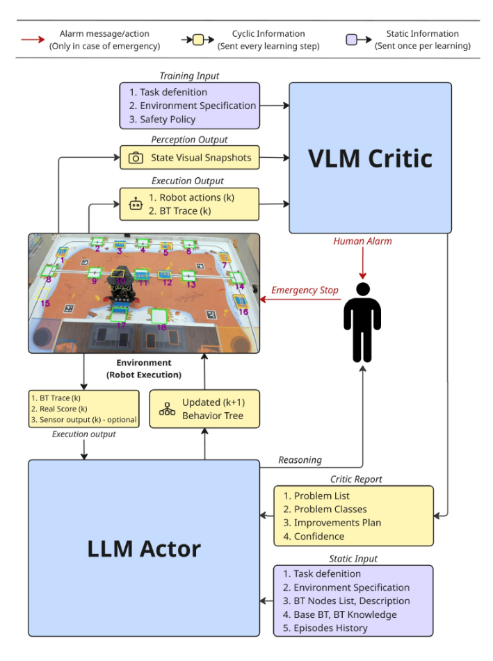
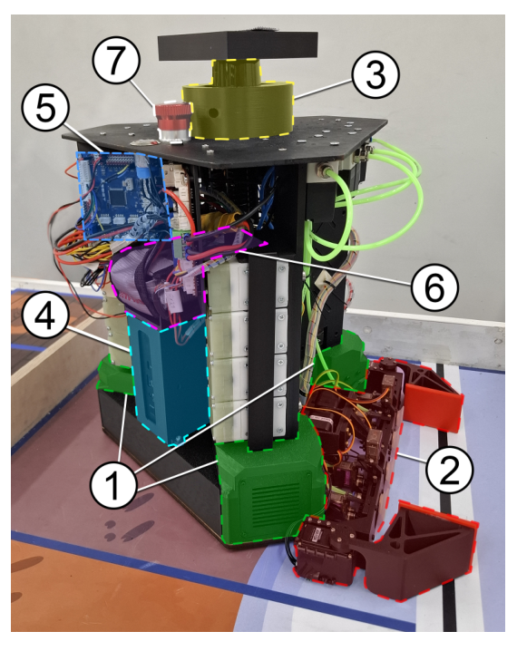
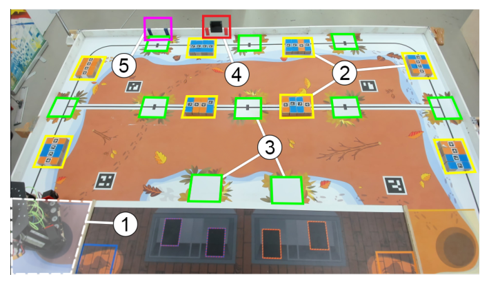
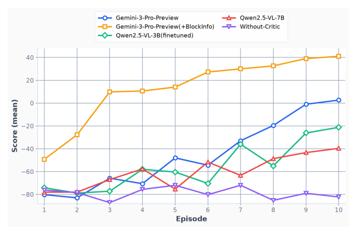
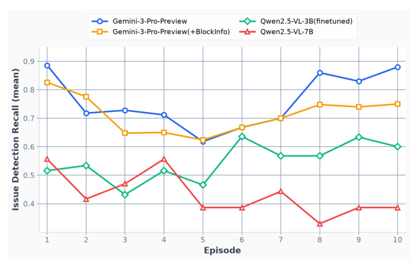
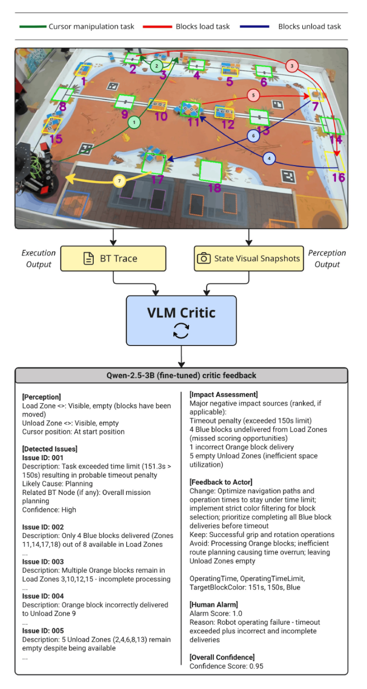
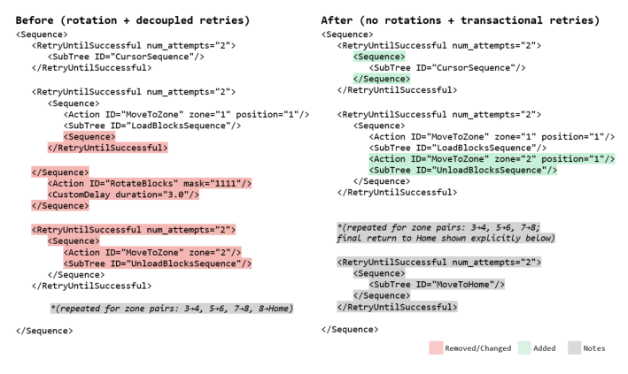

言语强化学习
行为树
VLM Critic + LLM Actor
闭环
IROS 2026 · arXiv 2603.22169
VersualRL：带视觉执行反馈的闭环言语强化学习，用于任务级机器人规划
VersualRL: Closed-Loop Verbal Reinforcement Learning with Visual Execution Feedback for Task-Level Robot Planning
Dmitrii Plotnikov*, Iaroslav Kolomiets*, Dmitrii Maliukov*, Dmitrij Kosenkov* 等 · Skoltech Intelligent Space Robotics Laboratory（*共同一作）
一句话总结：真实世界的机器人面临执行不确定性（布局变化、定位误差、底层控制误差），传统 RL 在子符号空间里学出的策略又黑盒又难调试。VersualRL 用 VLM critic（看视觉快照 + 行为树执行轨迹，输出结构化自然语言批评）配 LLM actor（做离散、可解释的行为树编辑），在两个基础模型都冻结、零梯度、零仿真的条件下，于真实移动操作机器人上闭环迭代精炼任务策略——不学稠密奖励，不改神经网络，只在符号层改行为树。
01摘要解读
论文提出 VersualRL，一个任务级机器人规划的闭环框架，用视觉执行反馈通过结构化自然语言批评迭代精炼可执行行为树（BT）。系统由两部分构成：
- VLM critic：分析视觉观测与 BT 执行轨迹，产生结构化的执行批评；
- LLM actor：执行离散、可解释的策略更新。
关键约束：物理部署时两个基础模型都保持冻结，被更新的只是"被执行的行为树"，在符号层修改、不做在线梯度式策略优化。这带来了透明推理、显式因果反馈、人类可解释的策略进化。在真实移动机器人执行"多阶段导航 + 操作"任务（含执行不确定性）上验证，结果支持可解释的策略改进、对执行失败的闭环适应、以及真实物理系统的成功部署。
VLM critic
三种模式（Initial/Intermediate/Final）+ 告警分 + 置信度
LLM actor
在专家节点库上做离散、可解释的 BT 编辑
冻结
两个基础模型 + critic 全程冻结，只改 BT
真机
移动操作机器人，5 场地 × 10 episode 闭环
02研究背景与动机（Introduction）
真实世界执行不确定性
移动机器人在真实环境里运行，面临布局变化、定位不完美、底层控制误差——这让鲁棒任务级策略的设计既困难又耗时。实践中常用行为树（BT）实现策略：BT 模块化、透明，但处理意外失败需要大量手工调参。
两条路线各自的短板
- 深度 RL / 多智能体 RL：提供了自主改进的原则性框架，但通常在子符号空间优化策略，产出的行为难解释、难调试，限制了真实部署；
- LLM 规划器：推理与泛化强，但通常开环运行，缺乏来自物理世界的接地反馈，难以可靠适应真实执行失败。
VersualRL 的定位：三个"不像"
- 不像 Reflexion 式的纯言语自省——反馈接地于物理机器人执行；
- 不像 RL-VLM-F 式的 VLM 奖励学习——直接编辑可执行符号 BT 策略，而非学稠密奖励模型或优化神经策略；
- 不像端到端可微学习——零梯度、零仿真，符号层进化。

图 1：闭环 VersualRL 架构。VLM critic 分析视觉快照与 BT 执行轨迹，产生结构化反馈；LLM actor 用 critic 反馈与人工核验的 episode 分数 R 更新可执行 BT。
03方法详解
3.1 策略表示：可执行行为树
任务策略表示为可执行 BT，提供模块化与可解释性。actor 在预定义的专家设计节点库与子树上直接修改 BT 的结构与参数，使更新保持透明、可验证、并扎根于已有专家知识。初始 BT 刻意简单、不编码任务策略，只作为迭代改进的起点。
3.2 LLM Actor：符号级策略精炼
actor 是符号层工作的 LLM，根据结构化反馈精炼现有 BT。为约束搜索空间、保证语法有效，actor 的提示上下文包含：(i) 任务定义、(ii) 环境规约、(iii) 可用 BT 节点库及描述、(iv) BT 编写知识（编码规则）与当前 BT。actor 不接收原始传感流、不直接控制机器人，只提出离散、可解释的 BT 结构与参数编辑。可选地，可给 actor 追加结构化的感知/传感器状态估计（论文把"方块颜色/朝向"作为一项消融），显著改善学习稳定性。
3.3 VLM Critic：视觉执行反馈
critic 是观察任务执行的 VLM，输入视觉快照 + BT 执行轨迹，输出接地于可观测证据的结构化自然语言反馈（而非标量奖励）。为支持执行的不同阶段，critic 在三种模式下工作：Initial / Intermediate / Final。除文本批评外，critic 还输出两个标量：
- 告警分 s ∈ [0,1]：问题严重度（s=0 干净，s∈[0.1,0.3] 轻微瑕疵，s∈(0.3,0.5] 临界，s∈[0.5,0.7] 需要处理，s>0.7 严重安全问题）；
- 置信度 c ∈ [0,1]：评估的确定性。
每个 episode 结束后，人工评估者核验物理任务结果，按固定评分规则计算 episode 分数 R（R 由预定义任务条件决定，不由 critic 预测）。
3.4 闭环流程（Algorithm 1）
每个 episode：执行当前 BT → critic 在三个阶段分析观测与轨迹产生反馈 → 若 s≥0.5 或 c<0.3 通知人工操作员 → actor 用最终 critic 反馈 + 人工核验分数 R 更新 BT，并把 (F, R) 存入记忆 H 供后续使用。
3.5 一个关键的定性案例（图 9）
在某个 episode 中，critic 的颜色/朝向感知不足，误报"卸载区为空、执行失败"，而 BT 轨迹与 R 显示运输与放置已成功。此时 actor 把 critic 输出当作噪声假设，转而以 BT 轨迹 + R 为据，施加保守且可解释的 BT 补丁：(i) 禁用盲目的 RotateBlocks(mask=1111)（颜色感知不可靠时避免时间开销与误旋转）；(ii) 用 RetryUntilSuccessful 包裹 CursorSequence 修复执行引擎边界情况；(iii) 把策略重构为相互隔离的 Load—Transport—Unload 事务子树并各加 RetryUntilSuccessful，防止跨区域对的宏观重试。
04实验设置
实验平台
- 定制移动操作机器人：三全向轮底座 + 伺服驱动夹爪（带辅助真空通道）+ LiDAR + 板载 Intel NUC + STM32 底层控制器 + 紧急停止按钮；
- 执行仓库物流式任务：在预定义区域间自主导航，抓取/旋转/放置方块，每运输周期最多 4 块。

图 2：移动机器人硬件架构：(1) 三全向轮底座 (2) 定制伺服夹爪+真空通道 (3) LiDAR (4) 板载 Intel NUC (5) STM32 底层控制器 (6) LiPo 电池 (7) 急停按钮。
任务定义
结构化仓库物流场景（限时）：把方块从装载区运到卸载区，每块至少部分落在卸载区内、且朝向正确（朝上那面的颜色决定有效性）；还需把可移动货架沿边界搬到指定侧（隐含要求清空相邻区域）。episode 在机器人回到终点区时结束。

图 3：实验场地布局：(1) 起止区 (2) 含方块组的装载区 (3) 指定卸载区 (4) 可移动货架初始位 (5) 货架目标位。
评估指标
- Human-verified episode score R（主指标，按 Table II 规则：操作时间 −1/秒、超时 −20、正确放置 +10/块、整批 +10、错误放置 −5、完全出区 −10、正确终点 +20）；
- Issue Detection Recall（IDR）：critic 对 ground-truth 执行问题的检出召回率；
- Confidence stability：critic 置信度的稳定性；
- Human alarm rate：触发人工告警的频率。
对比的 critic 配置（5 种）
| 配置 | 说明 |
|---|
| ① 无 critic | 只用 BT 执行轨迹 + 人工核验分数 R（消融视觉反馈的必要性） |
| ② Qwen2.5-VL-7B-Instruct | 未微调的大模型 critic |
| ③ Qwen2.5-VL-3B-Instruct（微调） | 88 个 episode（65 训练/23 验证）LoRA 微调（rank 16，RTX 4090 ≈7h） |
| ④ Gemini-3-Pro-Preview | 闭源多模态大模型 critic |
| ⑤ Gemini + BlockInfo | 额外提供符号化的方块颜色/朝向信息 |
每个配置在 5 个场地布局（不同方块朝向）上各跑 10 个连续 episode；每个 episode 后 actor 用 critic 反馈 + R 更新 BT。
05实验结果与分析
5.1 学习动态：微调的小 critic 胜过未调的大 critic

图 4：各环境平均人工核验 episode 分数 R。微调的 Qwen2.5-VL-3B 比更大的 7B 提升更稳定；Gemini(+BlockInfo) 最终表现最高、收敛最一致。
微调 Qwen2.5-VL-3B 的 R 提升比更大的 7B 更一致——任务特定的微调让 3B 模型产出更接地、更可执行的批评；未调的 7B 提升慢、方差高，说明领域适配比模型规模更重要。Gemini 收敛更快、最终 R 更高；加入符号化的方块颜色信息（Gemini+BlockInfo）进一步改善稳定性，取得最高最终性能。无 critic 基线提升最慢、最不稳：仅凭标量 R，actor 不知道失败原因，策略精炼缺乏针对性。
5.2 Issue Detection Recall（IDR）

图 5：各环境平均 Issue Detection Recall（IDR）。微调 3B 的召回率高于且稳于 7B；Gemini 视觉接地更强、召回率最高。
有趣的是，Gemini(+BlockInfo) 的 IDR 有时反而不如图像-only 的 Gemini——因为 IDR 衡量"问题检出"，而 BlockInfo 主要帮助解决颜色/朝向歧义、改善 actor 更新；剩余错误可能涉及空间放置、时机或操作失败，BlockInfo 对此无益，却能在任务分数上更好。
5.3 置信度稳定性与告警率
微调 3B 的置信度比 7B 稳定（7B 方差大、与视觉观测对齐不稳定）；Gemini 整体置信度高，但缺 BlockInfo 时在早期错误频发的 episode 里仍可能高置信。告警率方面：微调 3B 的告警频率随 episode 逐步下降（critic 冻结，下降反映的是 BT 变好、可观测失败减少）；Gemini(+BlockInfo) 取得最均衡的告警行为——早期正确捕捉朝向/放置错误，后期明显减少无谓告警。
5.4 因果归因 vs 感知精度（代表性 episode）

图 8：微调 Qwen2.5-VL-3B critic 的一个代表性 episode——完整轨迹 + 中间视觉输入 + 对应 critic 反馈。系统正确识别关键失败，并归因到正确的 Impact Issue 类别与相关 BT 节点。
critic 不仅报"出错了"，还归因到哪个影响类别、哪个 BT 节点。这种影响感知的归因使 actor 能针对性纠正，而非全局无差别重规划。

图 9：感知不确定性下的定性 BT 演化。critic 误报时，actor 以 BT 轨迹 + R 为据施加保守补丁（禁用盲旋转、包 RetryUntilSuccessful、拆分事务子树）。
06核心 Insights
1. 标量奖励 R 在不确定性下不够用
R 只反映整体好坏，
无法区分"执行（硬件）错误"与"规划错误"。结构化反馈（哪个节点、什么影响、什么原因）才是稳定策略改进的必需品——无 critic 基线最慢最不稳正是这个原因。
2. 因果归因质量 > 感知精度
一个能正确诊断失败原因的 critic，即便物体检测不完美，也能保证鲁棒适应；反之，感知再准但归因错，actor 也无所适从。
3. 瓶颈在感知，不在符号规划
结构化感知输入（BlockInfo）加速收敛——说明 VersualRL 的短板是
感知基础（颜色/朝向的视觉分辨），而非符号规划能力。
4. 领域适配 > 模型规模
微调的 3B critic 全面优于未调的 7B：与 BT 层错误类别的对齐，比通用视觉容量更重要。
5. actor 要学会"不信 critic"
critic 冻结、会犯错。actor 把 critic 输出当作
噪声假设、以 BT 轨迹 + R 为据施加保守补丁——这种"在符号层对冲感知不可靠"的能力，是闭环系统鲁棒性的关键。
07局限与结论
局限
- 受 critic 可观察/可归因的窗口限制：延迟后果的潜在故障（错误几步后才显现）难以归因，需更长时程时序推理与显式 trace 感知的根因归因；
- 继承 critic 的感知可靠性，感知不足时 actor 的保守更新可能牺牲最优性（如禁用本可有益的旋转）；
- 评估范围窄：单平台 + 单一仓库式任务 + 固定 BT 节点库，泛化到新布局/新本体/更丰富交互待验证。
结论（三大发现）
- 单独 R 分数在不确定性下不足，结构化反馈必不可少；
- 因果归因质量比感知精度更重要；
- 结构化感知输入加速收敛——瓶颈在感知基础而非符号规划。
VersualRL 实现了无需仿真、无需梯度的可解释硬件策略适应，为"透明机器人学习"、弥合"计划与现实鸿沟"指出了一条有前景的方向。